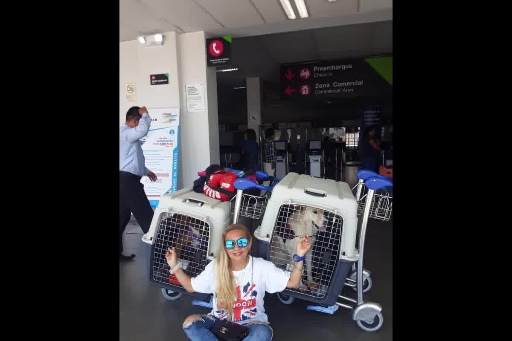
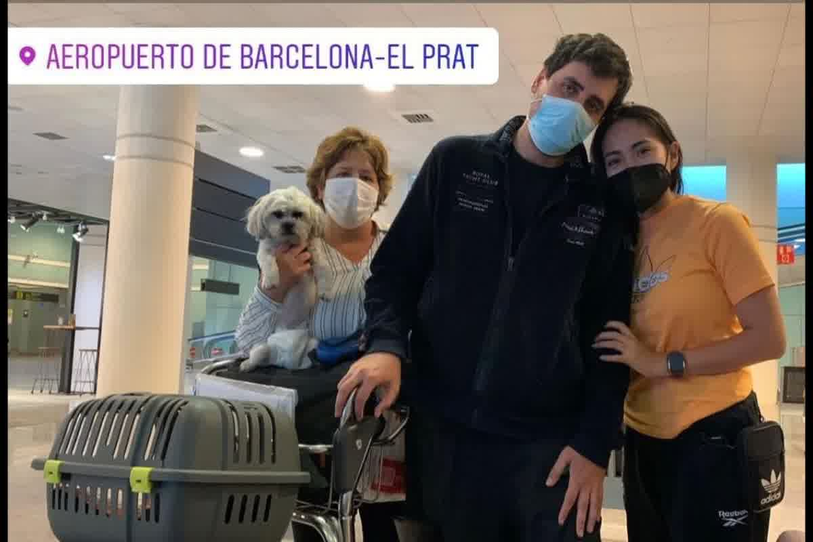

How to travel with your dog to Spain from Peru: microchip, rabies vaccine, 0.5 UI/mL serology, 3-month wait and official certificate with official official official endorsement by SENASA (Peruvian National Agrarian Health Service) (Peruvian National Agrarian Health Service) (Peruvian National Agrarian Health Service).

The file fails for two repeated reasons: invalid chronology and documents issued outside the window. Whoever is looking for how to travel with their dog to Spain from Peru usually arrives with a well-kept Peruvian card, but with a sequence that Europe does not accept, or with dates that are not enough for entry control. The standard does not evaluate intention or effort; evaluates traceability, deadlines and formats.
In consultation in Trujillo, cases appear with the dog clinically healthy, but with rabies applied before microchipping, or with a serology taken without waiting 30 days after vaccination. Peru has correct practices for the country, but European control is guided by regulations and paper evidence, not by what is “understood” in a local booklet.
The microchip compatible with ISO 11784/11785 must exist before the rabies vaccine that will be used to enter Spain. When rabies was applied first and the microchip later, the European authority does not recognize that vaccine as valid for travel. The record is corrected with a revaccination after the microchip, with its own counting of deadlines, and with a clear record of the identification number.
Primary vaccination requires 21 full days before dispatch to the European Union. The European Commission expresses this in its entry guide from third countries: on the day of shipment, at least 21 days must have passed since completing the primary vaccination. This count is both clinical and regulatory, and often clashes with moves that were planned weeks in advance.
The reinforcements have another reading: the reinforcement works only if there was no interruption of coverage. When a vaccine expired and was applied late, the case returns to the condition of primary vaccination for travel purposes. This change is not discussed at the border, because the data is in the date and in the validity recorded, and that is verified in minutes with the microchip reader.

From Peru, entry to Spain requires a rabies antibody titer when the country of origin is considered present or at risk, according to European lists. The Spanish Ministry of Agriculture summarizes it in its frequently asked questions section: the sample must be taken at least 30 days after the vaccine, the laboratory must be approved and entry is only allowed three months from the date of extraction. In that same material it is clarified that the minimum threshold is 0.5 IU/mL.
The sample taken before day 30 is not “saved” by a high result. Control does not reward haste; check dates. In Trujillo I have seen dogs with sufficient antibodies, but with an extraction carried out before the temporary minimum, and the file was unusable for the travel calendar that was already purchased. This scenario requires repeating a sample with a valid date and reactivates the three-month wait from the new extraction.
The minimum age is understood when terms are added. On a typical route from Peru: vaccine at 12 weeks, wait 21 days for the primary vaccination to be valid, blood draw on day 30 or later, and a three-month wait after the draw. Spain's own Ministry of Agriculture uses that calculation to explain why the practical minimum is closer to seven months in countries with a risk of rabies.
For the complete technical foundation, you can read Anti-rabies serology and 30-day window after primary vaccination: immunological and regulatory basis for international pet travelin our Technical Series. This text explains why day 30 is used as a control point and how the 0.5 IU/mL threshold is interpreted within the regulatory framework.
The final section is not resolved with a generic certificate. To enter Spain from a third country, the dog needs an official health certificate and a certified copy of the rabies vaccination compliant with international movement regulations associated with the microchip. The European Commission also indicates that this data must be attached to the certificate, and the control expects consistency between the microchip read, the date of vaccination and the serological result.
In Peru, the certificate is constructed with a clinical examination and then presented for endorsement by the official authority. In daily practice, the blockage appears when the microchip number is written incorrectly on a card or in a previous document. The endorsement does not validate doubtful information, because the official seal compromises health and documentary responsibility, and that makes the review more rigid.
The certificate has a window because it certifies a recent clinical status. Issuing it too early requires repeating the exam and procedure. Issuing it late leaves no room for a formal observation, such as an identification discrepancy, or a vaccine record with an illegible date. In tight files, the real cost is missing the flight and rescheduling with the entire endorsement circuit.
At the point of entry, documentary control and identity control are carried out by microchip. Spain applies Regulation (EU) 576/2013 and the associated implementing regulations, and this translates into a sequential review: identification, valid rabies, serology when applicable, and official document within validity. When a piece is missing, it is not “completed” at the airport, because the missing piece is tied to previous dates.
The lists and documentary models are updated. On April 19, 2024, the European Commission published Implementing Regulation (EU) 2024/1130, which modifies provisions related to identification and documentation in non-commercial movements. This information is important because many owners arrive with old formats downloaded from the Internet, and the control usually requires the current model of the official circuit.
This article is not based on time promises. It is based on the logic of the file: each date creates a subsequent limit. In consultation, the cleanest exit appears when the travel schedule is decided after having the extraction date and serological result, because there the exact day of admission can be calculated with documentary support.
The microchip reading defines the starting point. In dogs with a microchip implanted years ago, the reading may fail due to migration or an incompatible chip, and this requires re-identification and reconstruction of documentation. In Trujillo I have seen cases that were stuck for weeks just because the reading was not verified in advance, and the problem was only detected when the certificate was attempted to be issued.
The continuity of rabies is decided with dates and expirations. A timely reinforcement keeps the history current; A gap turns the next puncture into a primary vaccination in the eyes of European control. This change drags the 21 days and moves the minimum date for sampling, with a direct impact on the date of entry to Spain from Peru that the owner had in mind.
Serology concentrates the calendar. A withdrawal with a valid date starts the three-month count; an invalid draw restarts the count from zero when the draw is repeated. That is why real planning does not begin with certificates, it begins with chronology: identification, vaccine, day 30, extraction, approved laboratory, and only then the official circuit in Peru for the endorsement.
A poorly sequenced file ends in repeated serology and three months added since the last valid extraction. At Zoovet Travel we check microchip, anti-rabies chronology and serology, and manage the official certificate with official official official endorsement by SENASA (Peruvian National Agrarian Health Service) (Peruvian National Agrarian Health Service) (Peruvian National Agrarian Health Service) from Trujillo. This first review defines how to travel with your dog to Spain from Peru without restarts due to invalid dates. The difference compared to searching on the Internet is in working with auditable dates and with the current documentary model.
Calle Cuba 241, Urb. El Recreo — Trujillo, Perú